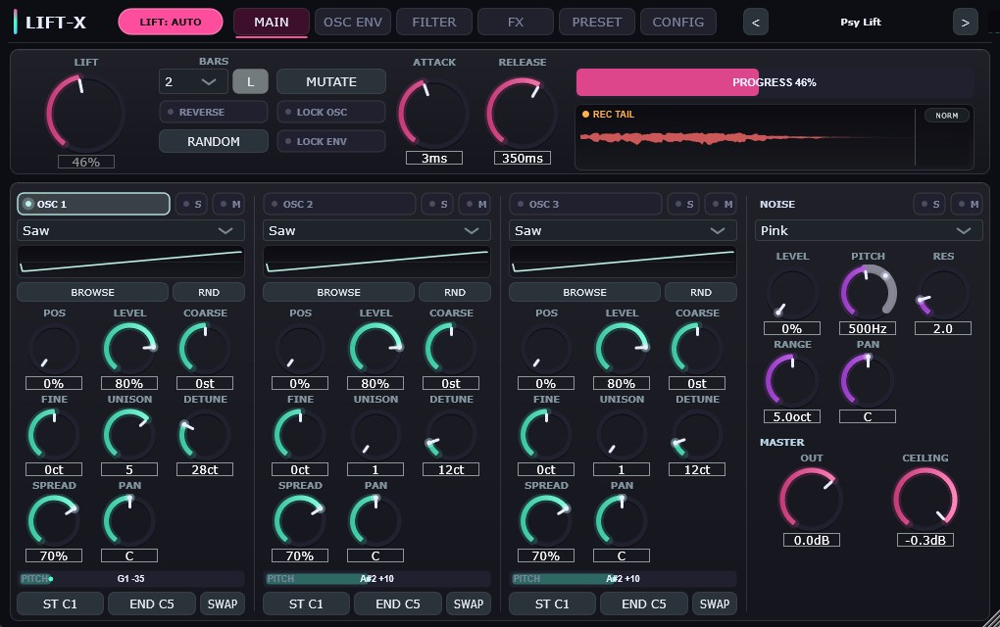
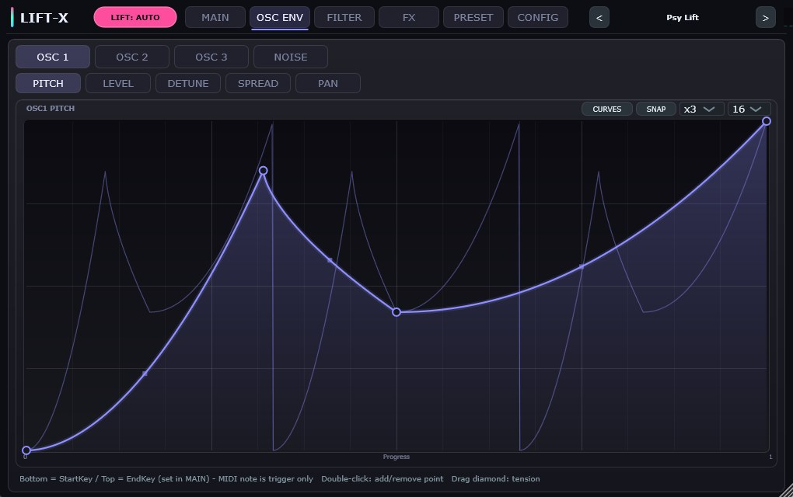
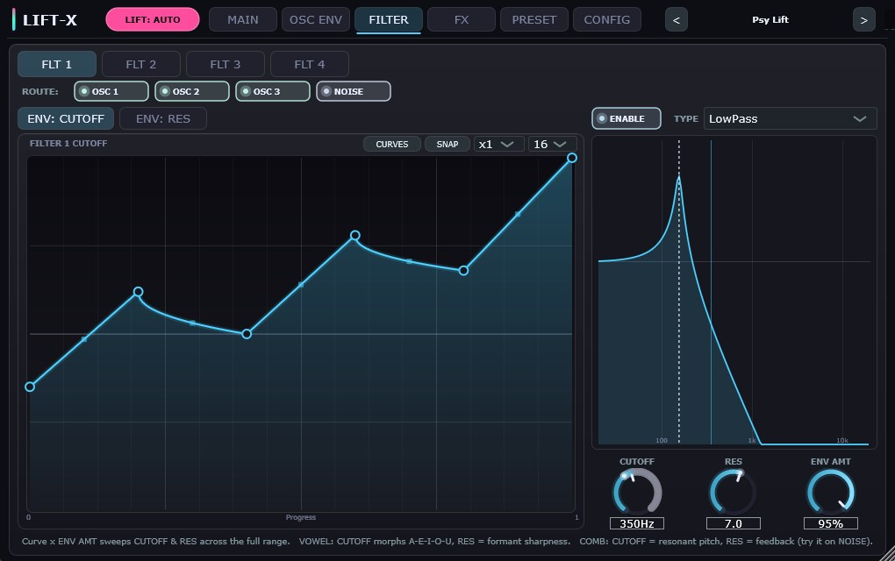
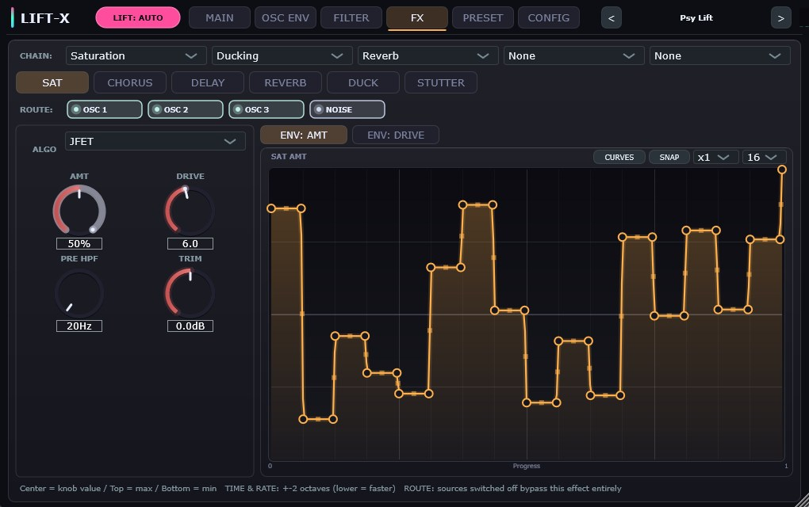
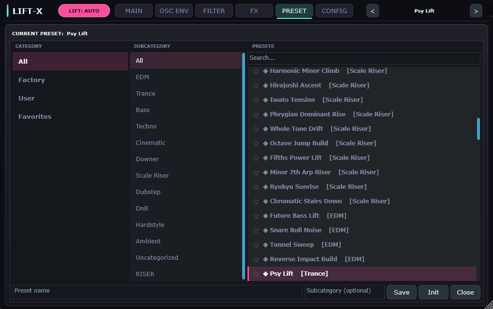
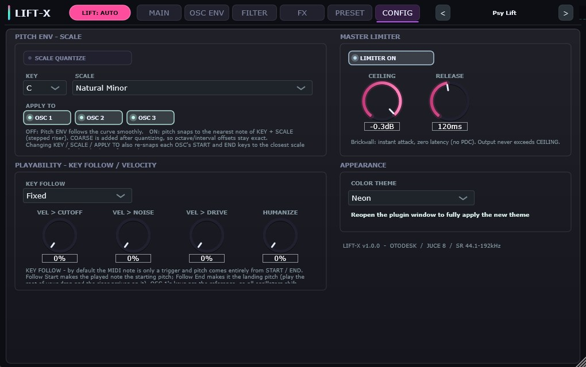

LIFT-X は、トランジション表現の常識を覆すライザー特化型 VST3 シンセサイザー。オシレーター・フィルター・FXの全自動化パラメーターに41個の独立多点カーブを完備し、単一の進行軸（LIFT）で統率。画期的な REPEAT ×1–32、70スケールクオンタイズ、Vowel / Comb フィルター、Beat Stutter、そして DAW 直結の WAV ドラッグ機能を搭載。






| カテゴリ | パラメーター | 範囲 | 概要 |
|---|---|---|---|
| Envelope System | 41 Curves / 1 Playhead | 1/32 to 16 Bars / Manual | Auto/Manual, REVERSE, REPEAT ×1–32, 128 Points/Curve, 47 Presets |
| Oscillators | 3 OSCs + Noise | 6 Waves (Sine/Tri/Sq/Saw/FM/Wavetable) | 7-Voice Unison, 3 Noise Types (White/Pink/Brown), Custom Wavetables |
| Pitch Control | Start Key → End Key | C-2 to G8 / 70 Scales | 絶対ピッチ制御・スケールスナップ・SWAP・PITCH RAIL音名表示・Key Follow |
| Filters | 4 TPT SVF Filters | LP / HP / BP / Notch / Vowel / Comb | 各ソース独立パス/バイパスルーティング (16 instances), Cutoff/Res カーブ連動 |
| FX Engine | 5 Reorderable Slots | Sat (10 ADAA) / Chorus / Delay / Reverb / Ducking / Beat Stutter | ソース別独立エフェクトアサイン・14パラメータ カーブ連動 |
| Capture & Export | Riser Capture Buffer | -90 dBFS / Up to 60 sec | 32-bit float WAV Drag & Drop / NORM (-0.3 dBFS) ノーマライズ |
| Presets & Config | 134 Factory Presets | 11 Categories / 10 Themes | RANDOM / MUTATE / BAR Lock / 10 Color Themes / Resizable 50%–200% |